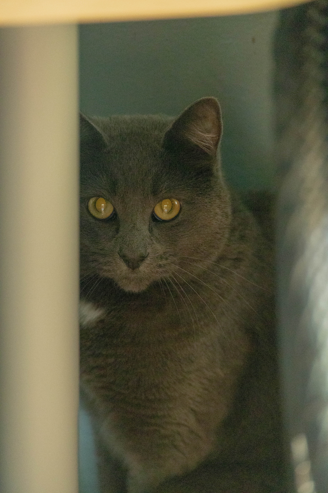

I'm Runcheng Li — everyone calls me Frank. I'm a software engineer who climbs rocks, a content creator who codes, and an outdoor athlete who builds apps to solve the problems he actually lives. Based in Boston, MA.

I started as a mechanical engineer at URI — thermodynamics, fluid mechanics, CAD — then pivoted to CS at Northeastern because I wanted to build things that live in the world, not just on paper. Both degrees shaped how I think: systems, structure, efficiency. Whether I'm designing a database schema or planning a shot list, I'm always asking "what's the cleanest way to make this work?"
I work independently and I move fast. I don't wait for perfect conditions — in climbing or in code. If there's a problem worth solving, I build the tool myself. That's how CodClimb started: I drove to a wet crag one too many times, so I made the app that would have stopped me.
I shoot with a Canon R6 II — portraits, street, landscapes, eco-photography. I fly a DJI Mini 3 for aerials and an Action 4 for outdoor sports footage. I edit in DaVinci Resolve and Lightroom Classic.
I've covered weddings, Harvard Ivy League events, university drone films, travel vlogs across 30 states, car shoots, and everything in between. I work across 14–200mm — wide for immersive scenes, tight for isolation and compression — adapting to whatever the content demands. I understand light, timing, and how to tell a story in a frame.
The plan for CodClimb's launch: I become the content. First climber on the app, first reviewer, first creator on Instagram, TikTok, and 小红书. I'm the product and the user.
I love skiing — powder days, black runs, going wherever looks good. I prefer going solo because I move when I want, where I want, at my own pace. That's not antisocial; that's efficient. When I'm with people I care about, I adjust. I just don't compromise my own momentum out of obligation.
I rock climb outdoors: V5–V6 bouldering, sport lead up to 5.11. I'm a regular at Rumney, NH — which is also why CodClimb exists. I surf 5–6ft waves, ride mountain bikes, and have done rooftop tent camping across the country.
30+ states road-tripped. I've shot the California coast at sunrise, skied Vermont powder in November, kayaked the Adirondacks, surfed Rhode Island, and climbed granite in New Hampshire. The road is my lab.
I don't have hobbies and a job. I have things I care about deeply, and I find ways to connect them. Skiing led to CodClimb. Road trips led to videography. Videography led to a portfolio. The portfolio led to a cleaner way of presenting who I am — which led here.
I'm direct. I communicate clearly. I don't resent people for their choices and I don't expect anyone to justify theirs to me. I care about quality — in relationships, in products, in photos. And I'd rather build something imperfect and ship it than spend forever planning something perfect that never exists.
I'm genuinely excited about AI — not as a buzzword but as a daily tool I use and keep evolving with. I follow the space closely, experiment with new models and capabilities as they drop, and think about how to integrate them meaningfully into what I build. Technology moves fast. I like moving with it.
Worked directly with biotech manufacturing clients (incl. Boston Scientific) on SolidWorks data migration to the 3DEXPERIENCE platform. Diagnosed complex CAD import issues using SQL, 3DTA, and FTA. Led enhancement of Enterprise Item Number (EIN) functionality, boosting customer part search efficiency by 200%.
Frontend fixes in React.js and Bootstrap contributed to a 30% increase in user satisfaction. Optimized PostgreSQL performance to support 10,000+ concurrent data accesses. Built role-based permissions (CRUD) and user features driving adoption among 4,000+ active users.
Designed a semi-hydraulic portable lifting table in SolidWorks for CMM clients, achieving +100% gains in mobility and efficiency. Optimized structural design under budget constraints, saving 20% of the research budget. Conducted material failure testing using Shimadzu Machine.
Analyzed fluid-particle mixing in micro-mixers using image analysis and fluorescence microscopy. Researched acoustically controlled particle separation and blood flow simulation in microchannels.
Algorithms, Full-Stack, OOD, ML, Pattern Recognition, HCI, Computer Networks, Cloud Computing.
Thermodynamics, Heat Transfer, Fluid Mechanics, FEA, Material Mechanics, 3D CAD Design.